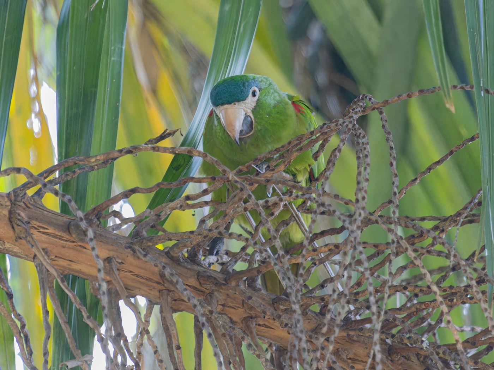

Maracanã-pequena
Red-shouldered MacawDiopsittaca nobilis
It is the smallest of the macaws, though it has long been placed outside of the genus Ara. It can be distinguished by the white skin on its face and two-toned beak. The name Maracanã, shared with the famous football stadium, has its origin in the indigenous Tupi word maraká, a rattle instrument, which its vocalizations resemble.